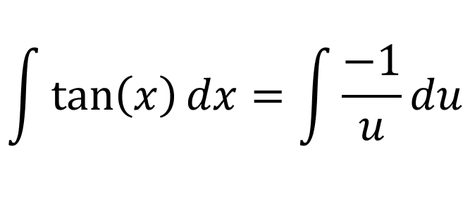
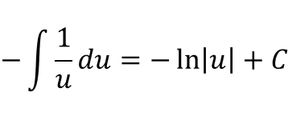
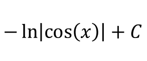
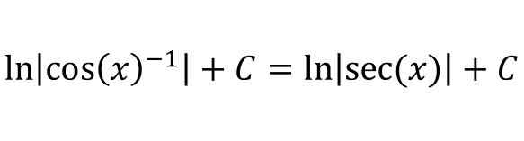

For tan(x), we will use the identity:
Lets say [u = cos(x)], which means [du/dx = -sin(x)]:
Evaluating the integral:
And we know what u is:
If we use the logarithmic rule:
For \(cot(x)\), We will use the cotangent identity:
Since \((sin(\theta))' = cos(\theta)\), it would make sense to use the substitution rule with \(u = sin(\theta)\):
Evaluating the integral: